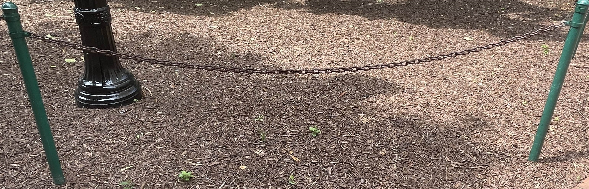
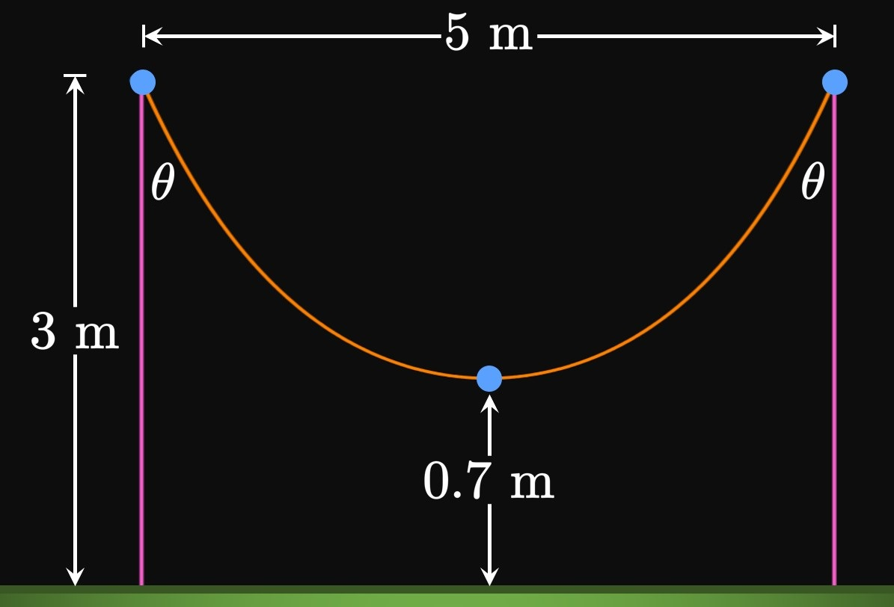

How do we define the hyperbolic sine
and hyperbolic cosine functions?
SOLUTION
These functions are defined by
\[\sinh x = \frac{e^x - e^{-x}}{2} \and \cosh x = \frac{e^x + e^{-x}}{2} \pd\]
Hyperbolic sine is an odd combination of exponential functions,
while hyperbolic cosine is an even combination of exponential functions.
SOLUTION
The definition of the hyperbolic sine function is
\[\sinh x = \frac{e^x - e^{-x}}{2} \pd\]
Replacing \(x\) with \(-x\) shows
\[
\ba
\sinh (-x) &= \frac{e^{-x} - e^{-(-x)}}{2} \nl
&= \frac{-e^x + e^{-x}}{2} \nl
&= - \frac{e^x - e^{-x}}{2} \nl
&\equalsCheck -\sinh x \pd
\ea
\]
This analysis proves that hyperbolic sine is odd.
EXERCISE 6
For
\(\cosh(-x) = \cosh x\)
prove the hyperbolic identity.
SOLUTION
The definition of the hyperbolic cosine function is
\[\cosh x = \frac{e^x + e^{-x}}{2} \pd\]
Replacing \(x\) with \(-x\) shows
\[
\ba
\cosh (-x) &= \frac{e^{-x} + e^{-(-x)}}{2} \nl
&= \frac{e^x + e^{-x}}{2} \nl
&\equalsCheck \cosh x \pd
\ea
\]
This analysis proves that hyperbolic cosine is even.
EXERCISE 7
For
\(\ds \tanh(-x) = -\tanh x\)
prove the hyperbolic identity.
SOLUTION
We have
\[
\ba
\tanh(-x) &= \frac{\sinh(-x)}{\cosh(-x)} \nl
&= \frac{-\sinh x}{\cosh x} \nl
&\equalsCheck -\tanh x \pd
\ea
\]
Thus, hyperbolic tangent is odd.
EXERCISE 8
For
\(\ds \sinh(x + y) = \sinh x \cosh y + \cosh x \sinh y\)
prove the hyperbolic identity.
SOLUTION
Starting with the definition of the hyperbolic sine function,
we have
\[
\ba
\sinh(x + y) &= \frac{e^{x + y} - e^{-x - y}}{2} \nl
&= \frac{e^x \, e^y - e^{-x} \, e^{-y}}{2} \pd
\ea
\]
Observe that
\[
\ba
\sinh x \cosh y &= \par{\frac{e^x - e^{-x}}{2}} \par{\frac{e^y + e^{-y}}{2}} \nl
&= \frac{e^x \, e^y + e^x \, e^{-y} - e^{-x} \, e^y - e^{-x} \, e^{-y}}{4} \cma \nl
\cosh x \sinh y &= \par{\frac{e^x + e^{-x}}{2}} \par{\frac{e^y - e^{-y}}{2}} \nl
&= \frac{e^x \, e^y - e^x \, e^{-y} + e^{-x} \, e^y - e^{-x} \, e^{-y}}{4} \pd
\ea
\]
So
\[
\ba
\sinh x \cosh y + \cosh x \sinh y
&= \small \frac{e^x \, e^y + e^x \, e^{-y} - e^{-x} \, e^y - e^{-x} \, e^{-y}}{4} + \frac{e^x \, e^y - e^x \, e^{-y} + e^{-x} \, e^y - e^{-x} \, e^{-y}}{4} \nl
&= \frac{e^x \, e^y - e^{-x} \, e^{-y}}{2} \nl
&\equalsCheck \sinh(x + y) \pd
\ea
\]
EXERCISE 9
For
\(\ds \cosh(x + y) = \cosh x \cosh y + \sinh x \sinh y\)
\(\ds \tanh(x + y) = \frac{\tanh x + \tanh y}{1 + \tanh x \tanh y}\)
prove the hyperbolic identity.
SOLUTION
We have
\[
\ba
\tanh(x + y) &= \frac{\sinh(x + y)}{\cosh(x + y)} \nl
&= \frac{\sinh x \cosh y + \cosh x \sinh y}{\cosh x \cosh y + \sinh x \sinh y} \pd
\ea
\]
Dividing the numerator and denominator by \(\cosh x \cosh y,\)
we get
\[
\ba
\tanh(x + y)
&= \frac{\ds \frac{\sinh x \cosh y}{\cosh x \cosh y} + \frac{\cosh x \sinh y}{\cosh x \cosh y}}{\ds \frac{\cosh x \cosh y}{\cosh x \cosh y} + \frac{\sinh x \sinh y}{\cosh x \cosh y}} \nl
&\equalsCheck \frac{\tanh x + \tanh y}{1 + \tanh x \tanh y} \pd
\ea
\]
SOLUTION
This procedure is identical to
that in Example 2,
apart from a single negative sign.
Let \(y = \acosh x;\)
then
\[x = \cosh y = \frac{e^y + e^{-y}}{2} \pd\]
Our objective is to solve for \(y\) in terms of \(x.\)
Multiplying both sides by \(2e^y\) gives
\[
\ba
2x e^y &= e^{2y} + 1 \nl
e^{2y} - 2x e^y + 1 &= 0 \pd
\ea
\]
This equation is a quadratic equation in terms of \(e^y \col\)
\[\par{e^y}^2 - 2x \par{e^y} + 1 = 0 \pd\]
So by the Quadratic Formula,
\[
\ba
e^y &= \frac{2x \pm \sqrt{4x^2 - 4}}{2} \nl
&= x \pm \sqrt{x^2 - 1} \pd
\ea
\]
Because \(e^y \gt 0,\)
the negative solution is extraneous.
Hence, the only solution is
\[e^y = x + \sqrt{x^2 - 1} \pd\]
Taking the natural logarithm of both sides yields
\[
\ba
y &= \ln \par{x + \sqrt{x^2 - 1}} \nl
\implies \acosh x &= \ln \par{x + \sqrt{x^2 - 1}} \cma
\ea
\]
as requested.
EXERCISE 15
For
\[\ds \asech x = \ln \par{\frac{1 + \sqrt{1 - x^2}}{x}}\]
prove the identity.
SOLUTION
This procedure is similar to
that in Example 2.
Let \(y = \asech x;\)
then
\[
\ba
x &= \sech y \nl
&= \frac{1}{\cosh y} \nl
&= \frac{2}{e^y + e^{-y}} \pd
\ea
\]
Our objective is to solve for \(y\) in terms of \(x.\)
Multiplying both sides by \(e^y + e^{-y}\) yields
\[
x e^y + x e^{-y} = 2 \pd
\]
Then multiplying both sides by \(e^y,\)
we get
\[
\ba
x e^{2y} + x &= 2 e^y \nl
x e^{2y} - 2e^y + x &= 0 \pd
\ea
\]
By the Quadratic Formula,
\[
\ba
e^y &= \frac{2 \pm \sqrt{4 - 4x^2}}{2x} \nl
&= \frac{1 \pm \sqrt{1 - x^2}}{x} \pd
\ea
\]
Because \(e^y \gt 0,\)
the negative solution is extraneous.
Since \(x = \sech y\) \(\gt 0,\) the only solution is
\[e^y = \frac{1 + \sqrt{1 - x^2}}{x} \pd\]
Taking the natural logarithm of both sides, we get
\[
\ba
y &= \ln \par{\frac{1 + \sqrt{1 - x^2}}{x}} \nl
\implies \asech x &= \ln \par{\frac{1 + \sqrt{1 - x^2}}{x}} \cma
\ea
\]
as requested.
SOLUTION
This procedure is nearly identical to the proof of the identity with \(\asech x.\)
Let \(y = \acsch x;\)
then
\[
\ba
x &= \csch y \nl
&= \frac{1}{\sinh y} \nl
&= \frac{2}{e^y - e^{-y}} \pd
\ea
\]
Our objective is to solve for \(y\) in terms of \(x.\)
Multiplying both sides by \(e^y - e^{-y}\) yields
\[
x e^y - x e^{-y} = 2 \pd
\]
Then multiplying both sides by \(e^y,\)
we get
\[
\ba
x e^{2y} - x &= 2 e^y \nl
x e^{2y} - 2e^y - x &= 0 \pd
\ea
\]
By the Quadratic Formula,
\[
\ba
e^y &= \frac{2 \pm \sqrt{4 + 4x^2}}{2x} \nl
&= \frac{1 \pm \sqrt{1 + x^2}}{x} \pd
\ea
\]
Note that \(e^y \gt 0,\)
so when \(x = 0\)
the solution is
\[e^y = \frac{1}{x} + \frac{\sqrt{1 + x^2}}{x} \pd\]
When \(x \lt 0,\)
we have
\[e^y = \frac{1}{x} - \frac{\sqrt{1 + x^2}}{x} \pd\]
Since \(\abs x\) \(= -x\) if \(x \lt 0,\) we write
\[e^y = \frac{1}{x} + \frac{\sqrt{1 + x^2}}{\abs x} \cma\]
which is always positive.
Taking the natural logarithm of both sides, we get
\[
\ba
y &= \ln \par{\frac{1}{x} + \frac{\sqrt{1 + x^2}}{\abs x}} \nl
\implies \acsch x &= \ln \par{\frac{1}{x} + \frac{\sqrt{1 + x^2}}{\abs x}} \cma
\ea
\]
as requested.
SOLUTION
This procedure is similar to
that in Example 2.
Let \(y = \atanh x;\)
then
\[
\ba
x &= \tanh y \nl
&= \frac{\sinh y}{\cosh y} \nl
&= \frac{\dfrac{e^y - e^{-y}}{2}}{\dfrac{e^y + e^{-y}}{2}} \nl
&= \frac{e^y - e^{-y}}{e^y + e^{-y}} \pd
\ea
\]
Our objective is to solve for \(y\) in terms of \(x.\)
Multiplying both sides by \(e^y + e^{-y}\) yields
\[
x e^y + x e^{-y} = e^y - e^{-y} \pd
\]
Then multiplying both sides by \(e^y,\)
we get
\[
\ba
x e^{2y} + x &= e^{2y} - 1 \nl
e^{2y} (1 - x) &= 1 + x \nl
e^{2y} &= \frac{1 + x}{1 - x} \pd
\ea
\]
Taking the natural logarithm of both sides, we get
\[
\ba
2y &= \ln \par{\frac{1 + x}{1 - x}} \nl
y &= \tfrac{1}{2} \ln \par{\frac{1 + x}{1 - x}} \nl
\implies \atanh x &= \tfrac{1}{2} \ln \par{\frac{1 + x}{1 - x}} \cma
\ea
\]
as requested.
SOLUTION
This procedure is nearly identical to the proof for the identity for \(\atanh x.\)
Let \(y = \acoth x;\)
then
\[
\ba
x &= \coth y \nl
&= \frac{\cosh y}{\sinh y} \nl
&= \frac{\dfrac{e^y + e^{-y}}{2}}{\dfrac{e^y - e^{-y}}{2}} \nl
&= \frac{e^y + e^{-y}}{e^y - e^{-y}} \pd
\ea
\]
Our objective is to solve for \(y\) in terms of \(x.\)
Multiplying both sides by \(e^y - e^{-y}\) yields
\[
x e^y - x e^{-y} = e^y + e^{-y} \pd
\]
Then multiplying both sides by \(e^y,\)
we get
\[
\ba
x e^{2y} - x &= e^{2y} + 1 \nl
e^{2y} (x - 1) &= x + 1 \nl
e^{2y} &= \frac{x + 1}{x - 1} \pd
\ea
\]
Taking the natural logarithm of both sides, we get
\[
\ba
2y &= \ln \par{\frac{x + 1}{x - 1}} \nl
y &= \tfrac{1}{2} \ln \par{\frac{x + 1}{x - 1}} \nl
\implies \acoth x &= \tfrac{1}{2} \ln \par{\frac{x + 1}{x - 1}} \cma
\ea
\]
as requested.
EXERCISE 19
For
\[\ds \deriv{}{x} \par{\cosh x} = \sinh x\]
prove the derivative formula.
SOLUTION
Working with exponential functions, we see
\[
\ba
\deriv{}{x} \par{\cosh x} &= \deriv{}{x} \par{\frac{e^x + e^{-x}}{2}} \nl
&= \frac{e^x - e^{-x}}{2} \nl
&= \sinh x \cma
\ea
\]
as requested.
EXERCISE 20
For
\[\ds \deriv{}{x} \par{\sech x} = - \sech x \tanh x\]
prove the derivative formula.
SOLUTION
Because \(\sech x\) \(= 1/(\cosh x),\)
we have
\[
\ba
\deriv{}{x} \par{\sech x} &= \deriv{}{x} \par{\frac{1}{\cosh x}} \nl
&= \frac{(0) \cosh x - 1 (\sinh x)}{\cosh^2 x} \nl
&= -\frac{\sinh x}{\cosh^2 x} \nl
&= -\sech x \tanh x \cma
\ea
\]
as requested.
EXERCISE 21
For
\[\ds \deriv{}{x} \par{\csch x} = - \csch x \coth x\]
prove the derivative formula.
SOLUTION
Because \(\csch x\) \(= 1/(\sinh x),\)
we have
\[
\ba
\deriv{}{x} \par{\csch x} &= \deriv{}{x} \par{\frac{1}{\sinh x}} \nl
&= \frac{(0) \sinh x - 1 (\cosh x)}{\sinh^2 x} \nl
&= -\frac{\cosh x}{\sinh^2 x} \nl
&= -\csch x \coth x \cma
\ea
\]
as requested.
SOLUTION
Because \(\tanh x\) \(= (\sinh x)/(\cosh x),\)
we have
\[
\ba
\deriv{}{x} \par{\tanh x} &= \deriv{}{x} \par{\frac{\sinh x}{\cosh x}} \nl
&= \frac{(\cosh x) \cosh x - \sinh x (\sinh x)}{\cosh^2 x} \nl
&= \frac{\cosh^2 x - \sinh^2 x}{\cosh^2 x} \nl
&= \frac{1}{\cosh^2 x} \nl
&= \sechPower{2} x \cma
\ea
\]
as requested.
(Note that \(\cosh^2 x - \sinh^2 x\) \(= 1\)
by the result of
Example 1.)
SOLUTION
Because \(\coth x\) \(= (\cosh x)/(\sinh x),\)
we have
\[
\ba
\deriv{}{x} \par{\coth x} &= \deriv{}{x} \par{\frac{\cosh x}{\sinh x}} \nl
&= \frac{(\sinh x) \sinh x - \cosh x (\cosh x)}{\sinh^2 x} \nl
&= \frac{- \par{\cosh^2 x - \sinh^2 x}}{\sinh^2 x} \nl
&= \frac{-1}{\sinh^2 x} \nl
&= -\cschPower{2} x \cma
\ea
\]
as requested.
(Note that \(\cosh^2 x - \sinh^2 x\) \(= 1\)
by the result of
Example 1.)
SOLUTION
Letting \(y = \acosh x,\)
we have \(x = \cosh y.\)
Differentiating both sides with respect to \(x\)
gives
\[
\ba
1 &= \sinh y \deriv{y}{x} \nl
\implies \deriv{y}{x} &= \frac{1}{\sinh y} \pd
\ea
\]
Since \(\cosh^2 y - \sinh^2 y = 1,\)
we have
\[\sinh^2 y = \cosh^2 y - 1 = x^2 - 1 \pd \]
Then \(\sinh y\) \(= \pm \sqrt{x^2 - 1}.\)
Since \(y = \acosh x \geq 0,\) \(\sinh y \geq 0\) and so we use the positive square root.
Hence,
\[\deriv{y}{x} = \boxed{\frac{1}{\sqrt{x^2 - 1}}}\]
SOLUTION
Letting \(y = \atanh x,\)
we have \(x = \tanh y.\)
Differentiating both sides with respect to \(x\)
gives
\[
\ba
1 &= \sechPower{2} y \deriv{y}{x} \nl
\implies \deriv{y}{x} &= \frac{1}{\sechPower{2} y} \pd
\ea
\]
Since \(\tanh^2 y + \sechPower{2} y = 1,\)
it follows that \(\sechPower{2} y = 1 - \tanh^2 y\) \(= 1 - x^2.\)
So
\[\deriv{y}{x} = \boxed{\frac{1}{1 - x^2}}\]
SOLUTION
Letting \(y = \acoth x,\)
we have \(x = \coth y.\)
Differentiating both sides with respect to \(x\)
gives
\[
\ba
1 &= -\cschPower{2} y \deriv{y}{x} \nl
\implies \deriv{y}{x} &= -\frac{1}{\cschPower{2} y} \pd
\ea
\]
Since \(\coth^2 y - \cschPower{2} y = 1,\)
it follows that \(\cschPower{2} y = \coth^2 y - 1\) \(= x^2 - 1.\)
So
\[\deriv{y}{x} = -\frac{1}{x^2 - 1} = \boxed{\frac{1}{1 - x^2}}\]
SOLUTION
Letting \(y = \asech x,\)
we have \(x = \sech y.\)
Differentiating both sides with respect to \(x\)
gives
\[
\ba
1 &= -\sech y \tanh y \deriv{y}{x} \nl
\implies \deriv{y}{x} &= -\frac{1}{\sech y \tanh y} \pd
\ea
\]
Since \(\tanh^2 y + \sechPower{2} y = 1,\)
it follows that \(\tanh^2 y = 1 - \sechPower{2} y\) \(= 1 - x^2.\)
Note that \(y = \asech x \geq 0,\)
so \(\tanh y \geq 0.\)
Thus, we choose the positive square root—namely,
\(\tanh y = \sqrt{1 - x^2}.\)
So
\[\deriv{y}{x} = \boxed{-\frac{1}{x \sqrt{1 - x^2}}}\]
EXERCISE 28
For
\[\ds \deriv{}{x} \par{\acsch x} = -\frac{1}{\abs x \sqrt{1 + x^2}}\]
prove the derivative formula.
SOLUTION
Letting \(y = \acsch x,\)
we have \(x = \csch y.\)
Differentiating both sides with respect to \(x\)
gives
\[
\ba
1 &= -\csch y \coth y \deriv{y}{x} \nl
\implies \deriv{y}{x} &= -\frac{1}{\csch y \coth y} \pd
\ea
\]
Since \(\coth^2 y - \cschPower{2} y = 1,\)
it follows that \(\coth^2 y = 1 + \cschPower{2} y\) \(= 1 + x^2.\)
If \(x \gt 0,\)
then \(y = \acsch x \gt 0\)
and so \(\coth y \gt 0.\)
But if \(x \lt 0,\)
then \(y = \acsch x \lt 0\)
and so \(\coth y \lt 0.\)
Thus, the denominator \(\csch y \coth y\) is always positive,
so we write
\[\deriv{y}{x} = \boxed{-\frac{1}{\abs x \sqrt{1 + x^2}}}\]
EXERCISE 29
At what point on the curve \(y = \cosh x\)
is the tangent line parallel to the line that passes through the points
\(\par{8, e^{-4}}\) and \(\par{10, e^4} \ques\)
SOLUTION
The slope of the line that passes through \(\par{8, e^{-4}}\) and \(\par{10, e^4}\)
is
\[\frac{e^4 - e^{-4}}{10 - 8} = \sinh 4 \pd\]
Since \(\textderiv{}{x} (\cosh x)\) \(= \sinh x,\)
the line is parallel to the tangent line at \(\boxed{x = 4}.\)
EXERCISE 30
Prove that the graph of \(y = \sech x\) has a horizontal asymptote of \(y = 0.\)
SOLUTION
By the definition of hyperbolic secant,
\[
\sech x = \frac{1}{\cosh x} = \frac{2}{e^x + e^{-x}} \pd
\]
As \(x \to \infty,\) \(e^x \to \infty\) and \(e^{-x} \to 0.\)
Hence, \(\lim_{x \to \infty} \sech x = 0.\)
Conversely,
as \(x \to -\infty,\) \(e^x \to 0\) and \(e^{-x} \to \infty.\)
So \(\lim_{x \to -\infty} \sech x = 0.\)
Thus, the graph of \(y = \sech x\) has a horizontal asymptote at \(y = 0.\)
EXERCISE 31
Prove that the graph of \(y = \tanh x\) has horizontal asymptotes of \(y = -1\)
and \(y = 1.\)
SOLUTION
Note that
\[
\ba
\tanh x &= \frac{\sinh x}{\cosh x} \nl
&= \frac{\dfrac{e^x - e^{-x}}{2}}{\dfrac{e^x + e^{-x}}{2}} \nl
&= \frac{e^x - e^{-x}}{e^x + e^{-x}} \nl
&= \frac{e^x + e^{-x} - 2 e^{-x}}{e^x + e^{-x}} \nl
&= 1 - \frac{2 e^{-x}}{e^x + e^{-x}} \pd
\ea
\]
Multiplying the numerator and denominator by \(e^x\) gives
\[
\tanh x = 1 - \frac{2}{e^{2x} + 1} \pd
\]
Note that \(2/(e^{2x} + 1) \to 0\) as \(x \to \infty\)
and \(2/(e^{2x} + 1) \to 2\) as \(x \to -\infty.\)
Thus, we have
\[
\lim_{x \to -\infty} \tanh x = -1 \and \lim_{x \to \infty} \tanh x = 1 \pd
\]
EXERCISE 32
For nonzero \(A\) and \(B,\)
show that the line \(y = A + Bx\) is tangent to \(y = A + \sinh Bx\)
at \(x = 0.\)
SOLUTION
The word tangent means \(y = A + Bx\)
and \(y = A + \sinh Bx\)
intersect each other with the same slope.
Both graphs intersect at \(x = 0 \col\)
\[
A + 0 \equalsCheck A + \sinh 0 \pd
\]
Also,
\[\deriv{}{x} (A + Bx) = B \and \deriv{}{x} (A + \sinh Bx) = B \cosh Bx \pd\]
At \(x = 0,\) the derivatives are equal:
\[B \equalsCheck B \cosh 0 \pd\]
Thus, the line \(y = A + Bx\)
is tangent to \(y = A + \sinh Bx\) at \(x = 0.\)
EXERCISE 33
At what point does the tangent to \(y = \cosh x\) have slope \(1 \ques\)
SOLUTION
Since \(\textderiv{y}{x} = \sinh x,\)
we have
\[
\ba
\frac{e^x - e^{-x}}{2} &= 1 \nl
e^x - e^{-x} &= 2 \nl
e^{2x} - 1 &= 2 e^x \nl
e^{2x} - 2 e^x - 1 &= 0 \pd
\ea
\]
By the Quadratic Formula,
\[
\ba
e^x &= \frac{2 \pm \sqrt 8}{2} \nl
&= 1 + \sqrt 2 \pd
\ea
\]
We scrap the negative solution because \(e^x \gt 0.\)
Taking the natural logarithm of both sides yields
\[x = \boxed{\ln \par{1 + \sqrt 2}} \approx 0.881 \pd\]
EXERCISE 34
Prove that the tangent to \(y = \sinh x\) never has the same slope as the tangent to \(y = \csch x.\)
SOLUTION
Note that
\[\deriv{}{x} (\sinh x) = \cosh x \and \deriv{}{x} (\csch x) = -\csch x \coth x \pd\]
Let's assume that there is a point at which the tangent to \(y = \sinh x\) has the same slope as the tangent to \(y = \csch x.\)
Equating the derivative functions, we see
\[
\ba
\cosh x &= -\csch x \coth x \nl
\cosh x &= -\frac{\cosh x}{\sinh^2 x} \pd
\ea
\]
This equation could be solved by \(\cosh x = 0,\)
but \(\cosh x \geq 1.\)
Multiplying both sides by \(\sinh^2 x\) gives
\[
\ba
\cosh x \sinh^2 x &= -\cosh x \nl
\sinh^2 x &= -1 \pd
\ea
\]
Since this equation has no solutions, we have a contradiction—there is
no point at which the tangents have the same slope.
EXERCISE 35
For
\[\ds \lim_{x \to 0^-} \csch 4x\]
evaluate the limit.
SOLUTION
Since \(\csch 4x =\) \(1/(\sinh 4x),\)
it follows that
\[\csch 4x = \frac{2}{e^{4x} - e^{-4x}} = \frac{2 e^{4x}}{e^{8x} - 1} \cma\]
where the last step is true by multiplying the numerator and denominator by \(e^{4x}.\)
Note that \(\csch 4x\) is undefined at \(x = 0;\)
in fact, \(x = 0\) is the location of a vertical asymptote.
Let's analyze the behavior from the left of the asymptote:
For \(x \lt 0,\)
observe that \(2 e^{4x} \gt 0\) and \(e^{8x} - 1 \lt 0\)
(since \(e^{8x} \lt 1\)).
For \(x \lt 0,\) the sign of \(\csch 4x\) is therefore \((+)/(-)\) \(= (-).\)
Hence,
\[\lim_{x \to 0^-} \csch 4x = \boxed{-\infty}\]
SOLUTION
Note that \(\sinh x \to \infty\) and \(e^x \to \infty\)
as \(x \to \infty.\)
Thus, this limit is in the indeterminate form \(\indInfty.\)
Let's try to cancel a common factor:
By the definition of the hyperbolic sine function,
\[\frac{\sinh x}{e^x} = \frac{\dfrac{e^x - e^{-x}}{2}}{e^x} = \frac{1 - e^{-2x}}{2} \pd\]
So the limit is
\[\lim_{x \to \infty} \frac{1 - e^{-2x}}{2} = \frac{1 - 0}{2} = \boxed{\frac{1}{2}}\]
SOLUTION
By the Chain Rule,
\[
\ba
\deriv{}{x} \, \asin (\tanh x)
&= \frac{1}{\sqrt{1 - \tanh^2 x}} \deriv{}{x} (\tanh x) \nl
&= \frac{1}{\sqrt{\sech^2 x}} \, \sechPower{2} x \nl
&= \frac{1}{\abs{\sech x}} \, \sechPower{2} x \nl
&= \frac{1}{\sech x} \, \sechPower{2} x \nl
&= \boxed{\sech x}
\ea
\]
Note that \(\abs{\sech x}\) \(= \sech x\)
because \(\sech x \gt 0.\)
EXERCISE 45
For
\[\ds \deriv{}{x} \par{\frac{x^3}{\asinh x}}\]
find the derivative.
SOLUTION
By the Quotient Rule,
\[
\ba
\deriv{}{x} \par{\frac{x^3}{\asinh x}}
&= \frac{\ds \par{3x^2} \, \asinh x - x^3 \par{\frac{1}{\sqrt{1 + x^2}}}}{\par{\asinh x}^2} \nl
&= \boxed{\ds \frac{3x^2 \, \asinh x - \dfrac{x^3}{\sqrt{1 + x^2}}}{\par{\asinh x}^2}}
\ea
\]
EXERCISE 46
For
\[\ds \derivOrder{}{t}{2} \par{\acsch t}\]
find the derivative.
SOLUTION
The first derivative is
\[\deriv{}{t} \par{\acsch t} = -\frac{1}{\abs t \sqrt{1 + t^2}} \pd\]
To differentiate \(\abs t,\) we note that \(\sqrt{t^2} = \abs t\) and so
\[\deriv{}{t} \abs t = \deriv{}{t} \par{\sqrt{t^2} \,} = \frac{t}{\sqrt{t^2}} = \frac{t}{\abs t} \pd\]
Thus,
\[
\ba
\derivOrder{}{t}{2} \par{\acsch t}
&= \deriv{}{t} \par{-\frac{1}{\abs t \sqrt{1 + t^2}}} \nl
&= \frac{\ds \par{\frac{t}{\abs t}} \sqrt{1 + t^2} + \abs t \par{\frac{t}{\sqrt{1 + t^2}}}}{\abs t^2 (1 + t^2)} \nl
&= \boxed{\frac{\ds \frac{t}{\abs t} \sqrt{1 + t^2} + \frac{t \abs t}{\sqrt{1 + t^2}}}{t^4 + t^2}}
\ea
\]
EXERCISE 47
For
\[\ds \derivOrder{}{t}{2} \par{\sechPower{4} t}\]
find the derivative.
SOLUTION
The first derivative is, by the Chain Rule,
\[
\ba
\deriv{}{t} \par{\sechPower{4} t}
&= 4 \, \sechPower{3} t \deriv{}{t} \par{\sech t} \nl
&= -4 \, \sechPower{4} t \tanh t \pd
\ea
\]
The second derivative is, by the Product Rule,
\[
\ba
\derivOrder{}{t}{2} \par{\sechPower{4} t} &= \deriv{}{t} \par{-4 \, \sechPower{4} t \tanh t} \nl
&= \par{-16 \, \sechPower{3} t \tanh t} (-\sech t \tanh t) - 4 \, \sechPower{4} t \par{\sechPower{2} t} \nl
&= \boxed{16 \, \sechPower{4} t \tanh^2 t - 4 \, \sechPower{6} t}
\ea
\]
EXERCISE 48
If \(\tanh x = 12/13,\)
then calculate the other five hyperbolic functions.
SOLUTION
Since \(\tanh^2 x + \sechPower{2} x = 1,\)
we see
\[
\ba
\sechPower{2} x &= 1 - \par{\tfrac{12}{13}}^2 = \tfrac{25}{169} \nl
\implies \sech x &= \tfrac{5}{13} \pd
\ea
\]
We choose the positive solution because the range of \(\sech x\) is \((0, 1].\)
Then
\[\cosh x = \frac{1}{\sech x} = \tfrac{13}{5} \pd\]
Because \(\cosh^2 x - \sinh^2 x = 1,\) it follows that
\[
\ba
\sinh^2 x &= \par{\tfrac{13}{5}}^2 - 1 = \tfrac{144}{25} \nl
\implies \sinh x &= \tfrac{12}{5} \pd
\ea
\]
We choose the positive solution because then \(\tanh x\) \(= (\sinh x)/(\cosh x)\) is positive.
Then
\[
\baat{2}
\csch x &= \frac{1}{\sinh x} &&= \tfrac{5}{12} \cma \nl
\coth x &= \frac{1}{\tanh x} &&= \tfrac{13}{12} \pd
\eaat
\]
EXERCISE 49
It is often easiest to simplify a function
before proceeding to differentiation.
An instructor wishes to inflate (curve) students' grades
using the function \(f(x) = \asinh kx,\)
where \(x\) is the student's raw score and \(y\) is the student's adjusted score.
If a raw score of \(90\%\) maps to an adjusted score of \(100\%,\)
then what adjusted score is earned by a student whose raw score is \(80\% \ques\)
[Hint: Calculate \(k\) to satisfy the condition \(f(0.9) = 1.\)]
SOLUTION
Since \(f(0.9) = 1,\)
we have
\[
\ba
\asinh 0.9 k &= 1 \nl
0.9k &= \sinh 1 \nl
0.9k &= \frac{e - e^{-1}}{2} \nl
\implies k &= \frac{e - e^{-1}}{1.8} \pd
\ea
\]
Hence, the identity of \(f\) is
\[f(x) = \asinh \par{\frac{e - e^{-1}}{1.8} x} \pd\]
A student who scores \(80\%\) earns an adjusted score of
\[
\ba
f(0.8) &= \asinh \par{\frac{e - e^{-1}}{1.8} \cdot 0.8} \nl
&\approx 0.9126 = \boxed{91.26\%}
\ea
\]
EXERCISE 51
Waves in an ocean have a length of \(2\) meters and a depth of \(5\) meters
(Figure 8).
Calculate the speed of the waves.
(The acceleration due to gravity is \(g = 9.8\) meters per second squared.)
SOLUTION
With \(d = 5\) and \(L = 2,\) the speed is
\[
\ba
v &= \sqrt{\frac{(9.8)(2)}{2 \pi} \, \tanh \par{\frac{2 \pi (5)}{2}}} \nl
&= \sqrt{\frac{9.8}{\pi} \, \tanh 5 \pi} \nl
&= \sqrt{\frac{9.8}{\pi} \frac{e^{5 \pi} - e^{-5 \pi}}{e^{5 \pi} + e^{-5 \pi}}} \nl
&\approx \boxed{1.766 \undiv{m}{sec}}
\ea
\]
EXERCISE 52
The speed of an ocean wave of length \(L\) and depth \(d\)
is given by
\[v = \sqrt{\frac{gL}{2 \pi} \, \tanh \par{\frac{2 \pi d}{L}}} \pd\]
Calculate and interpret \(\lim_{d \to \infty} v.\)
SOLUTION
The graph of hyperbolic tangent has horizontal asymptotes of \(y = \pm 1.\)
Thus, \(\tanh (2 \pi d/L) \to 1\) as \(d \to \infty.\)
So
\[
\ba
\lim_{d \to \infty} v &= \sqrt{\frac{gL}{2 \pi} (1)} \nl
&= \boxed{\sqrt{\frac{gL}{2 \pi}}}
\ea
\]
Hence, the speed of a wave in deep water can be approximated by \(\sqrt{gL/2 \pi};\)
in this form, we only need the wavelength!
EXERCISE 53
The velocity of a falling object of mass \(m\) as a function of time \(t\)
can be modeled by
\[v(t) = \sqrt{\frac{mg}{k}} \tanh \par{t \sqrt{\frac{g k}{m}}} \cma\]
where \(k\) is a constant and \(g\) is the acceleration due to gravity,
\(9.8\) meters per second squared.
If \(k = 0.2\) and \(m = 60\) kilograms, then calculate the terminal velocity—that is,
\(\lim_{t \to \infty} v(t).\)
SOLUTION
Note that \(\tanh( t \sqrt{gk/m}) \to 1\) as \(t \to \infty.\)
So
\[
\ba
\lim_{t \to \infty} v(t) &= \sqrt{\frac{mg}{k}} \nl
&= \sqrt{\frac{(60)(9.8)}{0.2}} \nl
&\approx \boxed{54.222 \undiv{m}{sec}}
\ea
\]
EXERCISE 54
The central curve of the Gateway Arch in St. Louis, Missouri (Figure 9), was designed by
the equation
\[y = 211.49 - 20.96 \cosh 0.03291765x \cmaa \abs x \leq 91.20 \cma\]
where \(x\) and \(y\) are measured in meters
and \(y\) is the height above the ground.
Calculate the maximum height of the central arch.
At what points is the height \(80\) meters?
Calculate the slope to the arch at the points in part (b).
SOLUTION
The maximum height occurs when \(x = 0 \col\)
\[
\ba
y &= 211.49 - 20.96 \cosh 0 \nl
&= 211.49 - 20.96 = \boxed{190.53 \un{m}}
\ea
\]
(Note: The Gateway Arch's maximum height is \(192 \un{m},\)
but the central arch is \(190.53 \un{m}\) tall.)
Using a graphing calculator,
we find the solutions of
\[y = 211.49 - 20.96 \cosh 0.03291765x = 80\]
to be \(x = \pm 76.647.\)
Hence, the central curve is \(80 \un{m}\) tall
at the points located \(76.647 \un{m}\) from the center.
The derivative function is
\[
\ba
y' &= -20.96(0.03291765) \sinh 0.03291765x \nl
&= -0.689953944 \sinh 0.03291765x \pd
\ea
\]
So at \(x = \pm 76.747,\) the slopes are
\[
\ba
y'(\pm 76.647) &= -0.689953944 \sinh 0.03291765 (\pm 76.647) \nl
&\approx \mp 4.273 \pd
\ea
\]
So the slope at \((-76.747, 80)\) is approximately \(4.273,\)
and the slope at \((76.747, 80)\) is approximately \(-4.273.\)
EXERCISE 55
The chain in Figure 10
hangs freely from two pillars that are \(2.6\) feet apart.
If the chain touches the pillars at a height of \(1\) foot above the ground,
and its lowest point is \(0.8\) foot above the ground,
then find an equation for the chain's shape.

SOLUTION
Let's take the \(x\)-axis to be the ground
and the \(y\)-axis to be the catenary's axis of symmetry,
where \(x\) and \(y\) are measured in feet.
Also let \(f\) be the function whose graph is the chain's shape;
then we have
\[f(x) = a \cosh \par{\frac{x}{a}} + c\]
for constants \(a\) and \(c.\)
Then we have the conditions \(f(0) = 0.8,\)
\(f(1.3) = 1,\) and \(f(-1.3) = 1.\)
Substituting \(f(0) = 0.8\) yields
\begin{align}
f(0) = a \cosh 0 + c &= 0.8 \nonum \nl
a + c &= 0.8 \pd \label{eq:chain-1}
\end{align}
Likewise, substituting \(f(1.3) = 1\) shows
\begin{align}
a \cosh \par{\frac{1.3}{a}} + c &= 1 \pd \label{eq:chain-2}
\end{align}
From \(\eqref{eq:chain-1}\) we have \(c = 0.8 - a,\)
which we substitute into \(\eqref{eq:chain-2}\) to attain
\[
a \cosh \par{\frac{1.3}{a}} + 0.8 - a = 1 \pd
\]
Using a graphing calculator shows \(a \approx 4.258.\)
By \(\eqref{eq:chain-1},\) \(c = 0.8 - 4.258\) \(= -3.458.\)
So the shape of the curve is
\[f(x) = \boxed{4.258 \cosh \par{\frac{x}{4.258}} - 3.458}\]
EXERCISE 56
In Figure 11,
with the aid of a graphing calculator,
calculate the angle \(\theta\) between a support beam and the freely hanging cable.

SOLUTION
Let's take the \(x\)-axis to be the ground and the \(y\)-axis to be the cable's axis of symmetry.
Then the cable's shape is a catenary:
\[f(x) = a \cosh \par{\frac{x}{a}} + c\]
for any constants \(a\) and \(c.\)
Our axis orientation provides the points \(f(0) = 0.7,\)
\(f(-2.5) = 3,\) and \(f(2.5) = 3.\)
Substituting \(f(0) = 0.7,\)
we have
\begin{align}
f(0) = a \cosh 0 + c &= 0.7 \nonum \nl
a + c &= 0.7 \pd \label{eq:chain-theta-1}
\end{align}
Likewise, substituting \(f(2.5) = 3\) gives
\begin{equation}
a \cosh \par{\frac{2.5}{a}} + c = 3 \pd \label{eq:chain-theta-2}
\end{equation}
From \(\eqref{eq:chain-theta-1},\) \(c = 0.7 - a;\)
substituting this expression into \(\eqref{eq:chain-theta-2}\) gives
\[a \cosh \par{\frac{2.5}{a}} + 0.7 - a = 3 \pd\]
By graphing, we find \(a = 1.642;\) then \(c = 0.7 - 1.642\) \(= -0.942.\)
So the shape of the hanging cable is
\[f(x) = 1.642 \cosh \par{\frac{x}{1.642}} - 0.942 \pd\]
The slope of the tangent to the cable at the right end is
\[f'(2.5) \approx 2.183 \pd\]
By similar triangles (see the figure), the angle is
\[\theta = \atan \par{\frac{1}{2.183}} \approx 0.430 = \boxed{24.6 \degree}\]